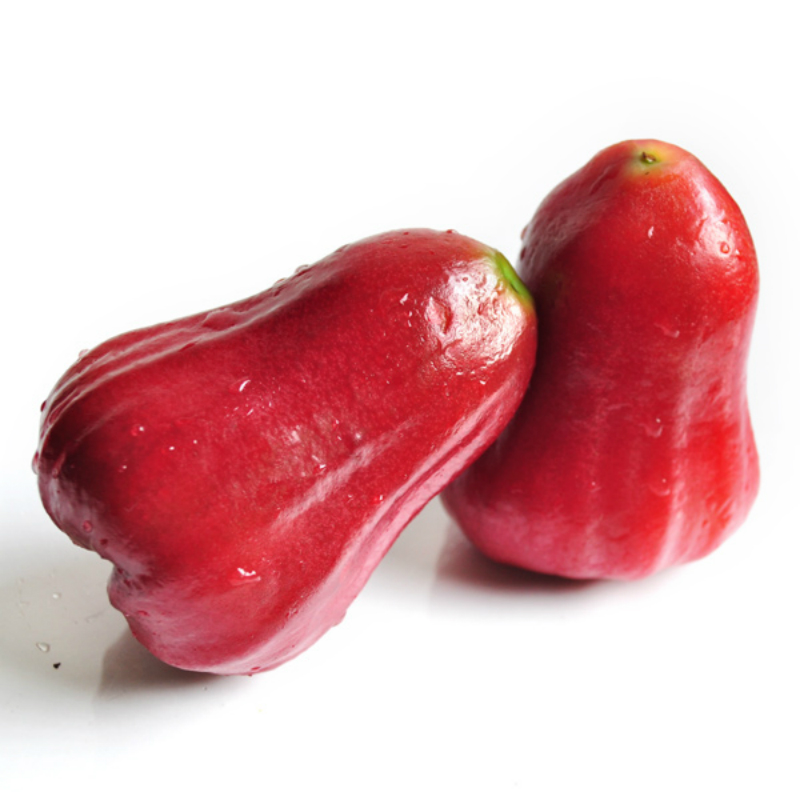

枇杷

採收季節:
枇杷最主要的採收期為2~4月。
產地:
枇杷最主要的產地是在台中、南投等中部地區。
營養價值:
枇杷的果肉含豐富的胡蘿蔔素，有助於維持視力、肌膚健康、促進胎兒發展；其中的蘋果酸與檸檬酸可以增進食慾、幫助消化。
枇杷葉性平味苦，有清肺下氣、治咳護嗓的功用，而市售的枇杷膏不只有枇杷葉，還會添加川貝等具有同樣功效的中藥材，以加強療效。
枇杷含有類胡蘿蔔素，若過量食用，容易造成色素沉積在皮膚表層。
另外，未成熟的枇杷容易導致腹瀉，選擇時須注意。
草莓

採收季節:
草莓最主要的採收期為12月到隔年的4月，尤其是農曆年過後更是草莓盛產之時。
產地:
苗栗縣大湖鄉是主要的草莓產地，另外台北的內湖也有產草莓。
營養價值:
草莓裡有豐富的維生素C，如果經常食用，不但可以防治壞血病之外，對預防高血壓、動脈硬化有所療效；果膠及膳食纖維則可以幫助消化、清理腸胃；最特別的是，草莓裡頭含有一種名叫鞣花酸的物質，對人體組織有保護的作用不受致癌物質所傷。
每次食用前最好吃5~10顆即可，因內含有豐富的膳食纖維，攝取過多容易產生腹瀉，腎臟功能不佳者或患尿路結石者不宜吃太多，因含有草酸鈣及鉀，容易使病情加重。
蓮霧

採收季節:
其實蓮霧的主要生產季節是在夏季的5~7月，但台灣在夏季時正處雨季，高溫多雨使蓮霧長得不好看，品質也不好，所以農民使用淹水、斷根及蓋黑網等方法將蓮霧的生產季提前。
產地:
台灣的蓮霧以屏東縣為最大的產區。
營養價值:
蓮霧富含膳食纖維、醣類、維生素C、鉀等營養素、還含有鉀，有助於維持細胞健康、平衡體內電解質與酸鹼值。
蓮霧還有潤肺、止咳、除痰、開胃、幫助消化的作用。
乾咳無痰或痰不易咳出的人，可將蓮霧煮冰糖食用；而將蓮霧抹上微量食鹽食用，可治消化不良，並能生津止渴。
蓮霧含有大量的水分和粗纖維，可以使胃部產生飽足感，在飯前空腹食用，這樣進餐時吃得少，同時也有助於減少膽固醇與動物性脂肪的吸收。